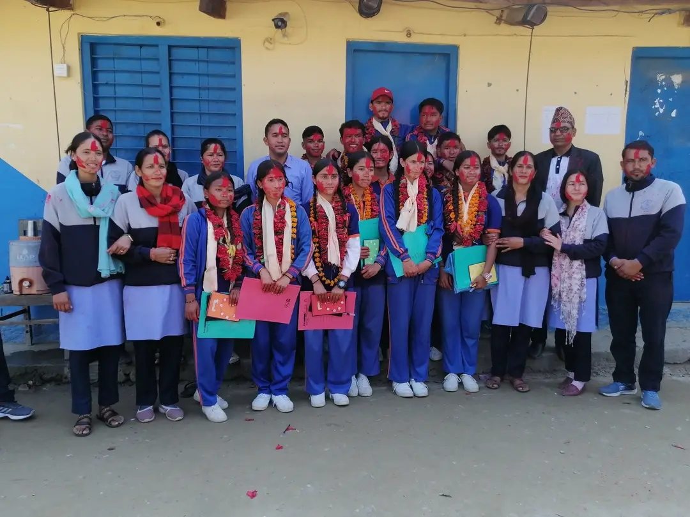

Journey Since Graduation
00d 00h 00m 00s

From the very first assembly to the final goodbye, our journey was defined by bonds that no textbook could ever explain. We navigated the highs of victory and the lows of exams as one unbreakable unit, proving that strength lies in unity. The walls of our school may hold our echoes, but the world will now witness our impact. Batch 2081 isn't just a group of students; we are a legacy of dreamers and achievers. As we spread our wings, let this platform be a reminder of where our story began. Together we stood, and together we shall rise in our own unique paths. To the legends of 2081—your time is now.

It was the day the air felt electric with competition and the spirit of Batch 2081. We cheered until our voices gave out, standing shoulder to shoulder as our classmates broke records. Every goal scored and every race won felt like a personal victory for all of us. The memory of that final whistle and our collective roar still sends shivers down our spines. It wasn't just about the trophies; it was about the undeniable proof that we were the strongest batch.

Lights, music, and a stage that felt like the center of the universe. We saw our friends transform from students into performers, showing talents we never knew existed. The laughter during the skits and the silence during the soulful melodies created a bond that words can't capture. It was the night we realized that our diversity was our greatest strength. We danced like no one was watching, celebrating the beautiful chaos of our youth.

2081-12-12 at 2:16 PM—the moment time seemed to freeze in our school corridor. With pens in hand and ink on our shirts, we signed our names on each other's memories forever. There were no toppers or back-benchers that day, only friends holding back tears as the realization set in. We walked out of those gates differently than we walked in—more mature, more connected, and deeply grateful. It was the end of an era, but the beginning of an eternal brotherhood.

The pillar of our institution who balanced discipline with a fatherly care. He didn't just manage the school; he managed our futures with wisdom and patience. His speeches in the morning assembly often gave us the fuel to push through the hardest weeks. We owe our sense of direction to his unwavering vision and high standards. A true leader who saw the potential in Batch 2081 before we saw it in ourselves.

The one who proved that every problem has a solution if you look at it from the right angle. Her patience with our endless questions was legendary, and her smile made even the toughest exams feel manageable. She taught us logic, but more importantly, she taught us to never give up on a challenge. Beyond numbers, she showed us the value of hard work and persistence. A mentor who calculated our success with love.

To every soul that made Batch 2081 what it was: this is for you. Whether you were the loud laughter in the canteen or the quiet brilliance in the library, you were the heartbeat of our batch. We leave behind our uniforms, but we carry forward the values and friendships that will never fade. Let the world know that 2081 wasn't just a year—it was the birth of leaders, innovators, and lifelong brothers. See you at the top!